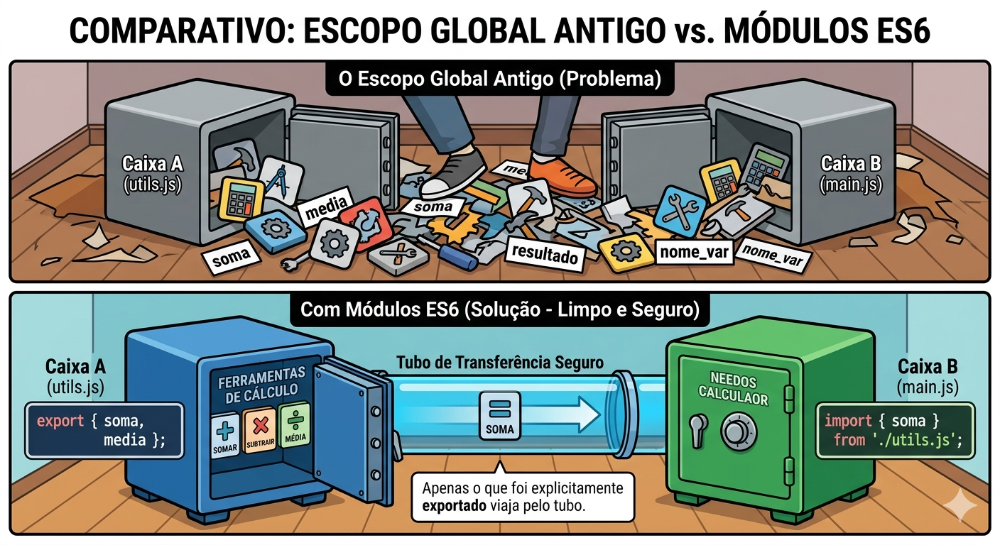
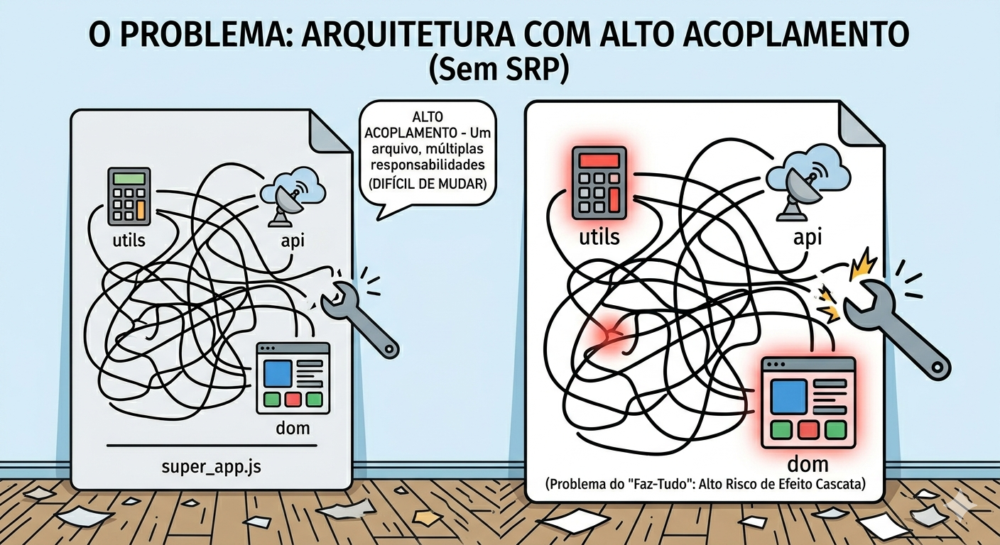
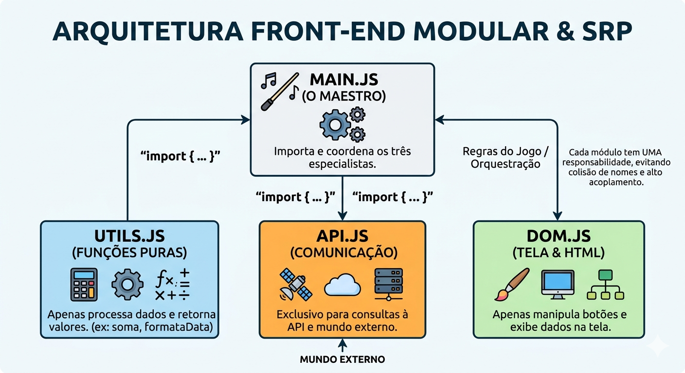
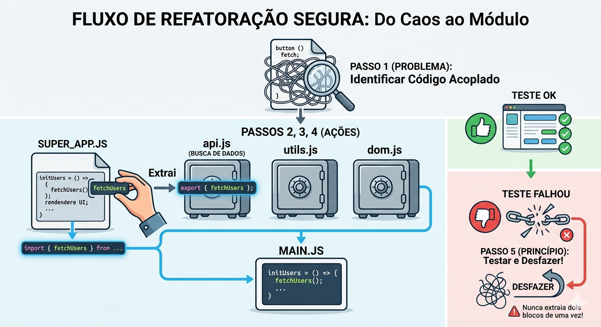

Descrição: Exposição dos módulos ES6 (import/export), organização de arquivos. Separar código em módulos: utils.js, dom.js, api.js, main.js.
Fomos contratados por uma startup em supercrescimento para assumir um painel de controle financeiro.
Ao abrir o repositório, nos deparamos com um único arquivo chamado app.js com mais de 5.000 linhas de código.
Lá dentro, misturam-se funções que calculam juros, blocos que montam tabelas HTML e chamadas de rede para o servidor.
Na última semana, um desenvolvedor tentou alterar a cor de um botão de alerta e, sem querer, quebrou a lógica que enviava o formulário de pagamentos, causando prejuízo real à empresa.
Se você entrasse hoje nesse projeto com um arquivo de 5.000 linhas misturando visual e regras de negócio, por onde você começaria a "arrumar a casa" para que a equipe pudesse voltar a trabalhar sem o medo constante de quebrar o sistema?
Imagine que, antigamente, o JavaScript funcionava como uma grande sala com uma única mesa de trabalho no centro (este é o escopo global, ou o window no navegador).
Todos os seus arquivos de código tinham que usar essa mesma mesa.
O Impacto: Em sistemas grandes, isso vira um pesadelo. Você nunca tem certeza se a variável que você criou vai ser apagada ou alterada por outro arquivo no meio do caminho. O sistema fica imprevisível.
Para resolver essa bagunça, o JavaScript introduziu os Módulos ES6 (a partir de 2015).
A regra mudou: agora, cada arquivo JavaScript é como uma caixa forte blindada e independente.
Se as caixas são blindadas, como compartilhamos ferramentas entre elas?
Através de "tubos de transferência" muito específicos, controlados por duas palavras-chave:
Os Módulos ES6 transformaram uma bagunça global num sistema organizado de importação e exportação.
Isso cria um contrato super claro: você só tem acesso àquilo que foi explicitamente exportado e importado.
O código fica mais seguro, fácil de dar manutenção e perfeito para ser reaproveitado em outras partes do projeto!
Imagine duas caixas fortes blindadas (Módulos). A Caixa A (utils.js) tem ferramentas de cálculo. A Caixa B (main.js) precisa dessas ferramentas. O escopo global antigo seria como jogar o conteúdo das duas caixas no chão do mesmo quarto, onde qualquer um pode pisar ou misturar tudo.
Com Módulos ES6, criamos um tubo de transferência seguro entre as duas caixas.
A Caixa A diz export { ferramenta } e a Caixa B diz import { ferramenta } from './CaixaA.js'. Apenas o que foi explicitamente exportado viaja pelo tubo.

// Arquivo: mathUtils.js (Nosso primeiro módulo)
// Usamos 'export' antes do que desejamos tornar público
export const calculateTaxes = (amount) => {
return amount * 0.15;
};
// Se algo é a principal função do arquivo, usamos 'export default'
export default function formatCurrency(value) {
return `R$ ${value.toFixed(2)}`;
}// Arquivo: main.js (Consumidor do módulo)
// Importamos o 'default' sem chaves, e os 'named exports' com chaves
import formatCurrency, { calculateTaxes } from './mathUtils.js';
let purchaseValue = 100;
let tax = calculateTaxes(purchaseValue);
console.log(`Imposto a pagar: ${formatCurrency(tax)}`);
// Saída: Imposto a pagar: R$ 15.00<script type="module" src="main.js"></script>Vamos manter a nossa analogia das Caixas Fortes para traduzir exatamente o que está acontecendo nesse código!
Aqui, nós temos duas caixas: a Caixa A (mathUtils.js), que fabrica e fornece ferramentas, e a Caixa B (main.js), que precisa dessas ferramentas para trabalhar.
Dentro desta caixa forte, criamos duas ferramentas financeiras. Mas repare que elas têm níveis de "fama" diferentes na hora de serem exportadas (colocadas no tubo de saída):
Agora, a nossa segunda caixa precisa usar essas ferramentas. Ela vai até o final do tubo e faz o pedido usando a palavra import.
A sintaxe muda dependendo do tipo de exportação que foi feita:
As duas chegam perfeitamente à Caixa B na mesma linha de código: import formatCurrency, { calculateTaxes } from './mathUtils.js';
Para que essa mágica dos tubos seguros (Módulos) funcione, o navegador (que é o dono do prédio onde as caixas estão) precisa ser avisado.
Antigamente, os navegadores não sabiam lidar com esses tubos. Quando você coloca <script type="module" src="main.js"></script> no HTML, você está dizendo ao navegador:
"Atenção! Este não é um script bagunçado do estilo antigo. Este arquivo usa o moderno sistema de Módulos (caixas fortes blindadas). Por favor, ligue os tubos de transferência!"
Bônus de Segurança: Ao usar type="module", o navegador automaticamente liga o "Strict Mode" (modo rigoroso). Isso significa que o JavaScript não vai deixar você cometer erros bobos, como criar variáveis sem usar let ou const, garantindo que o seu código fique não apenas organizado, mas extremamente seguro.
Erro de CORS: Como os módulos carregam arquivos externos de forma dinâmica, abri-los dando dois cliques no arquivo index.html (protocolo file://) gerará um erro de segurança (CORS policy) no console.
Para testar módulos, você obrigatoriamente precisa usar um servidor local (como a extensão Live Server do VSCode).
Vamos expandir a nossa analogia! Agora que sabemos como criar caixas seguras (os Módulos), precisamos decidir o que colocar dentro de cada uma. É aqui que entra o Princípio da Responsabilidade Única.
Pense que a sua aplicação é um restaurante e você criou um único arquivo chamado super_app.js para cuidar de tudo. Ele faz o trabalho de anotar os pedidos (botões no HTML), cozinhar (calcular dados) e falar com o fornecedor pelo telefone (buscar dados na API).
O Risco: Se o fornecedor mudar o número de telefone, o super_app.js precisa ser alterado. Se o cardápio mudar, ele precisa ser alterado. Se a decoração das mesas mudar, adivinhe? Ele precisa ser alterado. Ele tem vários motivos para mudar.
O Resultado: Isso gera o que chamamos de Alto Acoplamento. O código fica tão entrelaçado que consertar um botão pode quebrar um cálculo matemático sem você perceber.
O Princípio da Responsabilidade Única (SRP) é a regra que acaba com isso. Ele decreta que cada módulo (arquivo) deve ter um, e apenas um, trabalho a fazer.
No Front-end, aplicamos o SRP parando de misturar tudo e criando uma "equipe de especialistas". A estrutura sugerida no seu texto divide o projeto em 4 pilares clássicos. Pense neles como os músicos de uma orquestra:
O que faz: Contém "funções puras". Ele recebe um dado, faz um processamento (como cálculos matemáticos ou formatação de datas) e devolve o resultado.
O que NÃO faz: Ele não sabe o que é internet e não faz ideia de como desenhar algo na tela do usuário.
O que faz: É o único arquivo autorizado a conversar com o mundo externo (o servidor/banco de dados). Ele vai até a internet, busca ou envia as informações, e volta.
O que NÃO faz: Ele não formata os dados que chegaram e não mexe em nenhum botão da tela.
O que faz: É o único que tem permissão para "encostar" na tela do usuário (o HTML). Se algo precisa aparecer, sumir, mudar de cor, ou se um clique precisa ser monitorado, é trabalho dele.
O que NÃO faz: Ele não faz cálculos complexos e nunca se comunica diretamente com o servidor.
O que faz: Ele importa as ferramentas dos outros três arquivos e coordena o fluxo de trabalho. Ele não faz o trabalho braçal, apenas dita as regras.
Como ele age: Ele basicamente diz: "Ei, api.js, busque os dados do usuário. Pronto? Legal. Agora, utils.js, pegue esses dados brutos e formate a data de nascimento. Feito? Ótimo. dom.js, pegue essa data formatada e exiba na tela do usuário!"
Ao dividir seu projeto assim, você ganha paz de espírito. Se amanhã o endereço do seu servidor mudar, você só precisa abrir o arquivo api.js e alterar uma linha.
Você tem a garantia absoluta de que não quebrou os cálculos do utils.js nem o visual do dom.js, pois eles estão seguros em suas próprias caixas com responsabilidades únicas.


Vamos colocar a nossa orquestra para tocar! Agora que entendemos a teoria dos Módulos e do Princípio da Responsabilidade Única (SRP), veja como aquele conceito se transforma em código real.
Abaixo, temos a nossa "equipe de especialistas" trabalhando em perfeita harmonia:
// 1. api.js (O Carteiro) -> Única responsabilidade: Fetch de dados
export async function fetchUsers() {
// Finge que estamos indo na internet buscar isso...
return [{ id: 1, name: "ana" }, { id: 2, name: "carlos" }];
}
// 2. utils.js (O Especialista em Lógica) -> Única responsabilidade: Lógica pura
export function capitalizeName(name) {
// Transforma "ana" em "Ana"
return name.charAt(0).toUpperCase() + name.slice(1);
}// 3. dom.js (O Cenógrafo) -> Única responsabilidade: Interagir com o HTML
export function renderUsers(usersArray) {
const list = document.getElementById('user-list');
list.innerHTML = ""; // Limpa a lista antes de pintar
usersArray.forEach(user => {
list.innerHTML += `<li>${user}</li>`;
});
}
// 4. main.js (O Maestro) -> Única responsabilidade: Coordenar o fluxo
import { fetchUsers } from './api.js';
import { capitalizeName } from './utils.js';
import { renderUsers } from './dom.js';
async function initApp() {
// Passo 1: Maestro pede ao api.js os dados brutos
const rawUsers = await fetchUsers();
// Passo 2: Maestro pede ao utils.js para limpar/formatar os dados
const formattedUsers = rawUsers.map(user => capitalizeName(user.name));
// Passo 3: Maestro entrega os dados limpos para o dom.js pintar na tela
renderUsers(formattedUsers);
}
// O único "gatilho" global: Quando a página carregar, a orquestra começa!
document.addEventListener('DOMContentLoaded', initApp);Note a elegância da função initApp() no arquivo main.js. Qualquer pessoa, seja um programador iniciante ou um veterano, consegue ler essas linhas e entender exatamente o que está acontecendo.
O código conta uma história clara: busca, formata e renderiza. O Maestro não suja as mãos, ele apenas delega.
Aqui está o verdadeiro "pulo do gato" do SRP. Imagine que, amanhã, seu chefe entra na sala e diz: "Mudança de planos! Não vamos mais buscar esses usuários de um arquivo local, agora precisamos conectar com uma API em PHP num servidor do outro lado do mundo."
No passado (o escopo global bagunçado), você entraria em pânico tentando achar onde alterar isso sem quebrar a tela. Hoje?
Você sorri, abre apenas a caixa forte do api.js, e muda a rota lá dentro.
Nós isolamos os "comportamentos perigosos" e as dependências externas da nossa aplicação. Isso é o que chamamos de um sistema flexível, altamente coeso e de fácil manutenção!
Ética e Produtiva (IA): Ao herdar um código complexo, você pode usar uma IA Generativa (como Gemini ou ChatGPT) para ajudar a identificar "costuras" no código ("Identifique quais funções deste script lidam com DOM e quais lidam com fetch").
No entanto, a decisão final da divisão arquitetural deve ser sua, visando o longo prazo. Ferramentas de IA muitas vezes agrupam lógicas de forma conveniente, mas quebram a coesão a longo prazo.
Refatorar não é reescrever do zero. Refatoração é o processo de alterar a estrutura interna de um código para torná-lo mais fácil de entender e mais barato de modificar, sem alterar seu comportamento observável.
É como trocar o encanamento de um prédio sem que os moradores percebam falta de água.
Ao lidar com "código spaghetti", nossa estratégia deve ser cirúrgica, extraindo as peças aos poucos.
A ordem recomendada é: primeiro, extrair as funções puras e regras de negócio para o utils.js (são fáceis, pois não dependem de nada). Em seguida, isole a comunicação externa (Fetch/Ajax) para o api.js. Por fim, extraia as manipulações de tela para o dom.js. O código que "sobrar" no script original naturalmente se tornará o seu main.js.
Fluxo de Refatoração Segura:

Antes (Spaghetti - script.js)
// Tudo misturado...
document.getElementById('loadData').addEventListener('click', async () => {
// 1. Alteração visual (DOM)
document.getElementById('status').innerText = "Carregando...";
// 2. Fetch (API)
const response = await fetch('https://fakestoreapi.com/products/1');
const product = await response.json();
// 3. Regra de negócio / Util (Formatando preço)
const priceBR = `R$ ${product.price.toFixed(2).replace('.', ',')}`;
// 4. Alteração visual (DOM)
document.getElementById('status').innerText = "Sucesso!";
document.getElementById('result').innerHTML = `<b>${product.title}</b> - ${priceBR}`;
});Depois (Refatorado - main.js)
import { fetchProduct } from './api.js';
import { formatBRL } from './utils.js';
import { updateStatus, renderProduct } from './dom.js';
document.getElementById('loadData').addEventListener('click', async () => {
updateStatus("Carregando...");
try {
const product = await fetchProduct(1);
const priceBR = formatBRL(product.price);
updateStatus("Sucesso!");
renderProduct(product.title, priceBR);
} catch (error) {
updateStatus("Erro ao carregar os dados.");
}
});No "Antes", o manipulador de eventos fazia quatro coisas completamente diferentes. A responsabilidade daquele callback era muito alta. Se a formatação de dinheiro mudasse no país, teríamos que abrir o arquivo que controla os cliques de botão. Isso não faz sentido arquiteturalmente.
No "Depois", aplicamos a refatoração. O main.js conta uma história em alto nível (fetchProduct, formatBRL, renderProduct). Nós escondemos os detalhes de implementação. Isso também facilitou a inclusão de um bloco try...catch, tornando nosso código mais robusto (exigência técnica do nosso curso) contra falhas de rede. As implementações internas de fetchProduct ou renderProduct foram movidas para seus respectivos módulos, protegendo o fluxo principal.
A Regra de Ouro: Nunca adicione uma nova funcionalidade (feature) enquanto estiver refatorando. Como diz Robert C. Martin no livro Clean Code, são dois "chapéus" diferentes. Ou você veste o chapéu de refatorar (apenas reorganiza) ou o de construir (cria coisas novas). Se fizer os dois ao mesmo tempo, não saberá o que causou o bug.
Pergunta: Qual a diferença prática entre export default e export const?
Resposta: export default é usado quando o arquivo possui um propósito principal e único (ex: um componente, uma classe inteira). Você pode importá-lo dando qualquer nome (import QualquerNome from './arquivo.js'). O export const (nomeado) é para exportar várias pequenas peças de um arquivo utilitário. A importação exige o uso de chaves e o nome exato (import { minhaFuncao } from './arquivo.js').
Pergunta: Por que o console acusa o erro "CORS policy" quando tento abrir meu index.html com módulos?
Resposta: Módulos ES6 dependem do protocolo HTTP/HTTPS para resolver as requisições de arquivos externos (import), obedecendo rigorosas políticas de segurança (CORS). Se você abre o HTML pelo duplo-clique (protocolo file://), o navegador bloqueia a importação por precaução. A solução é rodar um servidor local (Live Server).
Pergunta: Eu posso importar tudo de uma vez usando import * as Utils from './utils.js'? É recomendado?
Resposta: Sim, você pode. Isso criará um objeto Utils com todas as funções dentro (ex: Utils.formatDate()). Porém, raramente é recomendado. O ideal é importar apenas o que você vai usar. Isso ajuda no "Tree Shaking" em ferramentas de build (como Webpack ou Vite), que apagam funções não utilizadas para deixar o arquivo final mais leve para o usuário.
Pergunta: Um módulo pode importar coisas de outro módulo, ou só o main.js faz as importações?
Resposta: Módulos podem importar de outros módulos tranquilamente! Por exemplo, se seu api.js precisa de um token de segurança, ele pode importar uma função getToken() diretamente do utils.js. O JavaScript moderno é inteligente o suficiente para resolver essa teia de dependências sem duplicar o carregamento.
Pergunta: Precisarei mudar essa estrutura de api, dom, utils quando a gente for para o PHP no back-end?
Resposta: Pelo contrário, essa arquitetura salvará nossa vida! Quando o PHP entrar, o utils.js, dom.js e main.js permanecerão intocados. Você só precisará alterar o conteúdo das funções de api.js para que, ao invés de usar arrays de teste, façam um fetch('meu_arquivo_php.php'). O resto da aplicação continuará funcionando sem nem perceber a troca do banco de dados!
Conexão com a Situação de Aprendizagem (SA):
No nosso projeto final, vocês terão que integrar uma aplicação Web usando PHP no Backend e Banco de Dados MySQL. A aula de hoje preparou o terreno perfeito para o sucesso de vocês. Ao extrairmos a comunicação de rede para um módulo isolado (api.js), garantimos que o código de interface gráfica da equipe fique protegido.
Na entrega do projeto, quando o Backend estiver pronto, vocês simplesmente irão ao arquivo api.js e trocarão as listas simuladas de JavaScript pelas requisições reais HTTP aos endpoints criados em PHP (CRUD).
Como orquestramos tudo no main.js, as engrenagens já estarão montadas, e a tela do sistema será alimentada por banco de dados real em questão de minutos, sem nenhum "código quebrado" por problemas de acoplamento!
Com o encerramento do nosso módulo de Front-end dinâmico, entraremos no Bloco 04 com foco absoluto em infraestrutura: Backend PHP e Banco de Dados. Deixaremos o navegador e mergulharemos no servidor, entendendo a ponte entre o usuário e o banco de dados.
Provocação antes de vir: Nós usamos o JavaScript hoje de forma isolada, rodando no computador do próprio usuário. Mas o que acontece quando precisamos salvar informações valiosas, senhas criptografadas e estoques críticos, onde o usuário não pode ter acesso e nem manipular os valores? Onde esse código deve rodar? Reflitam sobre segurança e até a próxima aula!